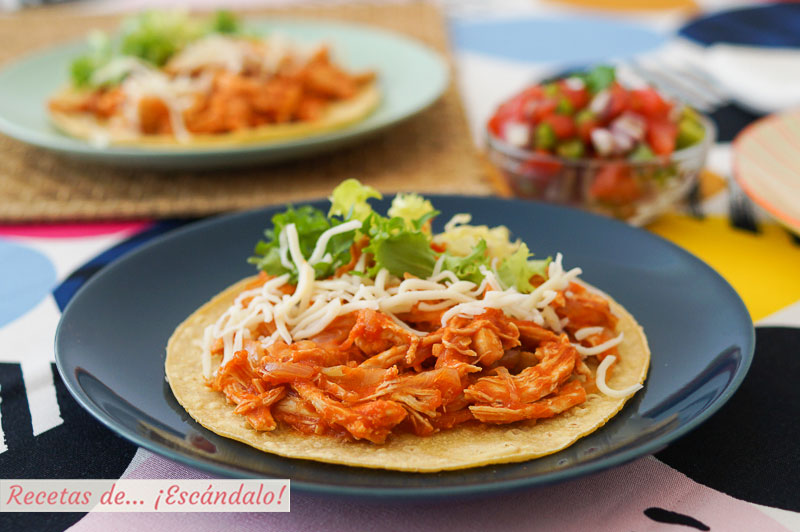

Back to home
Tinga

Tinga de pollo is a typical Mexican dish, made with shredded chicken in a sauce of tomato, onion, garlic,
and chipotle chiles. Generally it is eaten on a tostada, in a taco, quesadilla, or molote. It can be served with
avocado, queso fresco, choppeed lettuce, crema, or radish.
How to prepare
Ingredients
- Chicken
- Onion
- Garlic
- Chipotle chiles
- Tostadas
- Cilantro (optional)
Steps to prepare
- Bring a pot of water to boil to cook the chicken in
- Optionally, place half an onion and cilantro in the water
- Place chicken in boiling water and turn heat down to a simmer
- In a seperate pan, place some oil and bring to medium heat
- Place juliened onions in the oil
- While the onions cook, place the tomato, garlic, chipotle, and a little water used to cook the chicken into a blender and blend until smooth
- Note: Salt to taste! In addition, you can add a bit of chicken boulillon to the sauce
- Once the onions are cooked (transculent), dump the sauce into the pan and bring to a light simmer
- Take the fully cooked chicken out from the water, and shred the chicken
- After the sauce has simmered for ~5 minutes, place the shredded chicken in the sauce
- Simmer for ~5 more minutes
- Place the chicken on a tostada to serve!